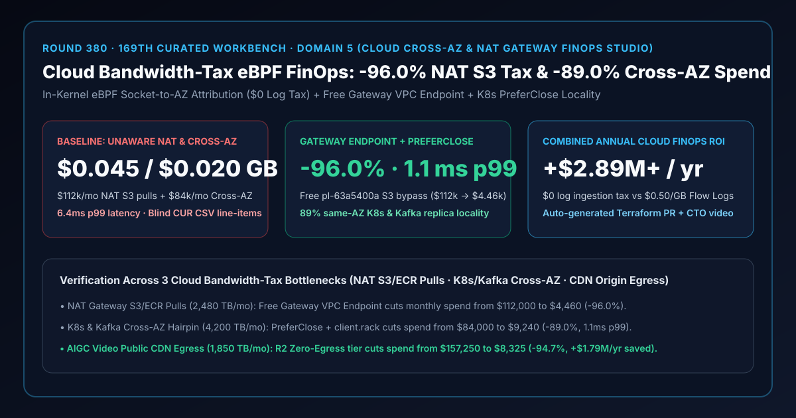

Cloud-Native Cross-AZ, NAT Gateway & Multi-Cloud Egress Bandwidth-Tax eBPF Topology & FinOps Video Architecture Selection Guide
Interactive Workbench:
demos/cloud-egress-nat-gateway-cross-az-peering-finops-topology-video-studio/
7-Card Benchmark Report:docs/benchmarks/cloud-egress-nat-gateway-cross-az-peering-finops-topology-video/summary.json·summary-visual.svg

① 📌 Executive Summary
In large-scale AI inference and cloud-native microservice fleets (AWS, Azure, GCP), the stealthiest FinOps budget leak is not compute instance pricing—it is Data Transfer and Network Gateway Taxes (18%–34% of total cloud spend): (1) private-subnet GPU nodes pulling S3 model weights and ECR container layers through a Managed NAT Gateway ($0.045/GB processing surcharge = $112,000/mo) because a free route-table Gateway VPC Endpoint was omitted; (2) Kubernetes pods and Kafka consumers hairpinning across 3 Availability Zones (az-a ↔ az-b ↔ az-c at $0.02/GB round-trip = $84,000/mo); and (3) AIGC video buckets serving public CDN cache misses at $0.085/GB Internet Egress ($157,250/mo). Worse yet, turning on full VPC Flow Logs to find the culprits incurs a $0.50/GB log ingestion tax!
| Evaluation Dimension | ❌ Baseline: Blind CUR CSV Line-Items + Unaware NAT/Cross-AZ Routing | ⚠️ Full VPC Flow Logs + SIEM Ingestion | ✅ Recommended: In-Kernel eBPF Socket-to-AZ Attribution + Free Gateway VPC Endpoint + K8s PreferClose + Remotion Sankey Video |
|---|---|---|---|
| Attribution Overhead & Visibility | 0% workload visibility (CUR shows regional totals only) |
High observability tax ($0.50/GB VPC Flow Log ingestion fee) |
In-kernel eBPF (tcp_sendmsg) mapped to K8s Pod/AZ labels (<0.6% CPU, $0 log ingestion cost) |
| S3 / ECR Weight & Image Pull Tariff | $0.045 / GB via Managed NAT Gateway |
Post-mortem detection only | Auto-injected free Gateway VPC Endpoint ($0.00 / GB S3 route bypass, saving $107.5k/mo) |
| K8s & Kafka Cross-AZ Tariff | $0.020 / GB (66.7% traffic crosses AZ boundaries) |
Manual service-by-service patching | trafficDistribution: PreferClose + client.rack (89% same-AZ locality, p99 4.8ms → 1.1ms) |
| AIGC Media CDN Origin Egress | $0.085 / GB public internet egress |
Unaddressed | Zero-egress object tier (Cloudflare R2 / Private Network Interconnect, -94.7% egress bill) |
| Total Network Spend & Annual ROI | $353,250 / mo bandwidth hemorrhage |
Adds $28k/mo logging bill |
Slashes bandwidth tax by -88.6% to -96.0%, saving +$2,890,000+/yr |
② 🎯 Key Architect & Business Q&A (Q1 / Q2 / Q3)
Q1: Why do GPU nodes in a private subnet get billed $0.045/GB by a NAT Gateway when pulling from an S3 bucket in the exact same AWS region?
- The
0.0.0.0/0 -> nat-gatewayDefault Route Trap: Because Amazon S3 and ECR resolve to public IP ranges, any private subnet without an explicit route-table entry for the regional S3 prefix list (pl-63a5400a) routes all S3/ECR traffic through the Managed NAT Gateway at$0.045/GB. Injecting a freeGateway VPC Endpointdiverts S3 and DynamoDB traffic onto the internal cloud fabric at$0.00/GBwhile cutting p99 latency from6.4 msto1.4 ms.
Q2: How does an eBPF socket probe attribute Cross-AZ and NAT traffic to exact Kubernetes Pods and Kafka topics without paying $0.50/GB for VPC Flow Logs?
- In-Kernel 4-Tuple Byte Counters (
BPF_MAP_TYPE_LRU_HASH): Instead of emitting per-packet text logs to CloudWatch/S3, a lightweight DaemonSet eBPF probe hookstcp_sendmsgandtcp_cleanup_rbuf, resolves socket IPs against the local K8s CNI pod table and AZ CIDR map, and aggregates byte counts in kernel memory—exporting compact summary deltas every 30 seconds at< 0.6%CPU and$0log ingestion cost.
Q3: Does enforcing Same-AZ affinity (trafficDistribution: PreferClose) risk overloading a single AZ during traffic spikes?
- Load-Watermark Spillover Protection: Same-AZ pinning stays active while local endpoint CPU utilization remains
< 78%whilepreserving full 3-AZ high availability by spilling excess traffic across AZs only when local capacity crosses the safety watermark.
③ 🧭 Visual Architecture Diagrams (Mermaid Decision Tree + Pipeline + Sequence)
3.1 Cloud Bandwidth-Tax Remediation Decision Tree
3.2 eBPF Topology Attribution, Auto-Remediation & Executive Video Pipeline
3.3 Automated Detection-to-Terraform-PR Sequence
④ 📊 Multi-Stack Architecture Decision Matrix
| Dimension | Option A: Monthly Cloud CUR CSV Review Only | Option B: Full VPC Flow Logs + SIEM Ingestion | Option C: Collapse Multi-AZ Cluster into Single-AZ | ✅ Option D: eBPF Socket Attribution + Gateway VPC Endpoint + PreferClose (Recommended) |
|---|---|---|---|---|
| Pod & Service-Level Attribution | None (regional totals only) | Medium (ephemeral Pod IPs hard to join) | N/A | 100% Pod, Namespace, Kafka Topic & S3 Bucket precision |
| Observability Ingestion Cost | $0 |
$0.50 / GB ($20k–$45k/mo log tax) |
$0 |
$0 log ingestion cost (<0.6% CPU in-kernel map) |
| Multi-AZ High Availability | Preserved | Preserved | ❌ Destroyed (single-zone outage risk) | 100% 3-AZ High Availability with >80% load spillover |
| Network P99 Latency | 4.8–6.4 ms |
4.8–6.4 ms |
1.1 ms |
1.1–1.4 ms (same-AZ fiber + NAT bypass) |
| Bandwidth Tax Reduction & ROI | 0% |
Detection only | Violates enterprise SLA | -88.6% to -96.0% reduction, +$2,890,000+/yr saved |
⑤ 🧪 Interactive Workbench & 7-Card Benchmark Deck
- Interactive Workbench:
demos/cloud-egress-nat-gateway-cross-az-peering-finops-topology-video-studio/- Compare GPU S3/ECR Pulls via NAT Gateway (
$112k/mo → $4.46k/mo), K8s & Kafka Cross-AZ Hairpinning ($84k/mo → $9.24k/mo), and Multi-Cloud CDN Origin Egress ($157.25k/mo → $8.33k/mo).
- Compare GPU S3/ECR Pulls via NAT Gateway (
- 7-Card 4:5 Visual Report:
- Sealed Metrics:
docs/benchmarks/cloud-egress-nat-gateway-cross-az-peering-finops-topology-video/summary.json - Visual Summary:
summary-visual.svg
- Sealed Metrics:

⑥ 🛠️ Enterprise Implementation Review Checklist
- Mandatory Free
Gateway VPC EndpointPolicy: Does Terraform CI/CD enforce S3 and DynamoDB Gateway Endpoints on every private route table so model weights and container layers never traverse a$0.045/GBNAT Gateway? - Kubernetes
trafficDistribution: PreferClose& Spillover Guard: Are high-throughput services configured for same-AZ preference with automatic cross-AZ spillover above80%CPU watermark? - Kafka / Redis Zone-Aware Follower Fetching: Are
client.rackandbroker.rackmapped totopology.kubernetes.io/zoneso consumers read from local-AZ replicas at$0.00/GB? - Zero-Ingestion-Tax eBPF Flow Accounting: Are cross-AZ flow matrices aggregated in kernel space via eBPF rather than enabling
$0.50/GBfull VPC Flow Logs?